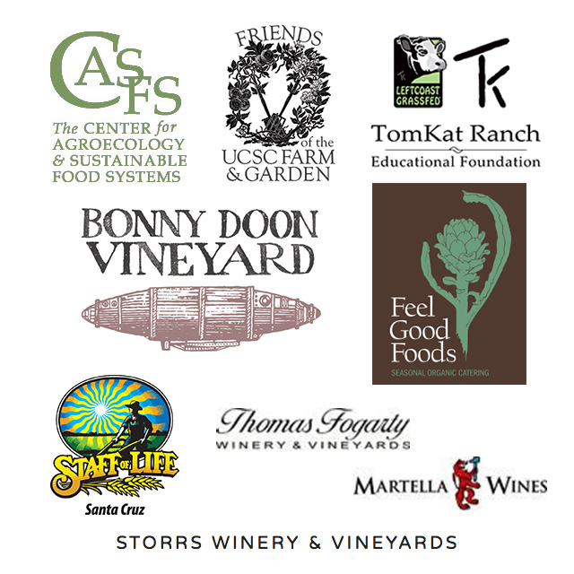

Sixth Annual Farm to Fork Benefit Dinner

Celebrate the UC Santa Cruz organic farm and garden at the Sixth Annual Farm to Fork Benefit Dinner, taking place on Sunday, August 28 at the UC Santa Cruz Farm
and the historic Cowell Ranch Hay Barn.
Enjoy remarks by artist and Apprenticeship graduate Harrell Fletcher, who developed
the UC Santa Cruz Collective Museum project, as you feast on a fabulous locally sourced organic meal by Amy Padilla and Heidi Schlecht of Feel Good Foods.
Among this year's culinary offerings are Belgian endive with wild King salmon appetizer, and TomKat Ranch grilled New York steak accompanied by a bounty of fresh and delicious CASFS-grown produce.
Before you take your seat at the table, join local winemakers for a special pouring in the Hay Barn, featuring wines from Bonny Doon Vineyard, Storrs Winery, and Martella Wines.
An on-farm reception and tours will begin at 3:00 pm, with dinner at 5:00 pm in the newly renovated
Cowell Ranch Hay Barn.
Tickets for the event are $150.

For more information or to purchase tickets, please visit our website,
or contact us at casfs@ucsc.edu, (831) 459-3240.
Event highlights
 Harrell Fletcher, Artist and co-creator of the Collective Museum at UC Santa Cruz
Harrell Fletcher, Artist and co-creator of the Collective Museum at UC Santa Cruz
Harrell Fletcher received his BFA from the San Francisco Art Institute and his MFA from California College of the Arts. He is a graduate of the Apprenticeship Program at UC Santa Cruz and went on to work on a variety of small Community Supported Agriculture farms, which impacted his work as an artist. Fletcher has produced a variety of socially engaged collaborative and interdisciplinary projects since the early 1990’s. His work has been shown at galleries and museums world-wide. Harrell will lead a special tour of the Collective Museum sites located on the Farm during the reception, beginning at 3:30 p.m
Leigh Gaymon-Jones, First-Year Apprentice, CASFS
Leigh is a member of this year’s Apprenticeship in Ecological Horticulture program and is currently working towards an MFA, with a focus in Social Justice Arts Practice. She cultivates her artistic interests by investigating multiple forms of movement – including various styles of contemporary techniques, Ballet, West African forms, Capoeira and Contact Improvisation. Leigh has built her community development skills by working as the Director of Operations for Urban Roots, a youth-development organization that uses farming as a means of transformation for young people and their communities.
 Daniel Press, Executive Director, CASFS
Daniel Press, Executive Director, CASFS
Professor Daniel Press became the Executive Director of the Center for Agroecology & Sustainable Food Systems (CASFS) in July 2012, and has been a member of UC Santa Cruz’s Environmental Studies Department since 1992. With wide-ranging interests in environmental policy, Dr. Press has conducted research on land and open-space preservation efforts, water and air quality, and the greening of US manufacturing as related to policy decisions. Dr. Press’s long-term goal is to help make CASFS financially self-sufficient so that it may support agroecological research and training into its next half century and beyond.
Partners and Sponsors

Support the Apprenticeship Program